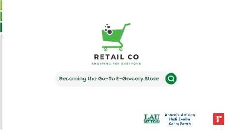
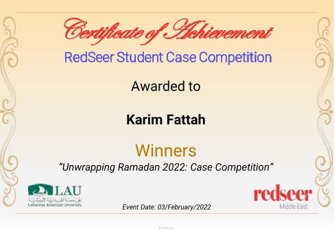

Redseer / LAU Sailors Consulting
Making a case for a different kind of grocery business.
A winning university case proposal for a UAE retailer, connecting Ramadan demand with technology, sustainability, and customer engagement.
Read the story ↓The business question
Our team, LAU Sailors Consulting, developed a growth strategy for Retail Co., an offline grocery chain in the UAE facing competitive challenges. The case asked us to think about how the business could regain momentum around Ramadan and build a stronger position over time.
Working as a team, we approached the problem through a combination of sustainability initiatives, technology proposals, marketing, and customer engagement. The presentation’s ambition was to help Retail Co. become a go-to e-grocery destination.
Connecting sustainability to participation
One part of the strategy proposed packaging-return programs linked to discounts, alongside a Green Vision campaign. The idea connected an environmental initiative with a reason for customers to participate and return.
It was useful to think about sustainability in the context of the customer relationship. A proposal needs to explain how the initiative fits into people’s behavior and the retailer’s offer, as well as what it aims to improve.
Technology and Ramadan engagement
Our technology proposals included augmented- and mixed-reality shopping experiences and UAE-themed NFTs aimed at younger consumers. Those ideas reflected the case’s 2022 context and were elements of the proposal, not deployed features.
The marketing plan included Ramadan-themed social filters, influencer collaborations, digital coupons, and personalized promotions. Iftar cooking classes and loyalty programs added ways for customers to engage with the brand beyond a single transaction. Together, the ideas explored several routes to a closer relationship with shoppers.

The forecast and the result
The proposal projected 14.5% revenue growth over 2022–2025. That figure was a forecast within our competition solution, rather than a measured commercial result. The practical outcome we can point to is the competition: our team won, as recorded in the certificate attached to my LinkedIn project.
The certificate is dated 3 February 2022 and names the Redseer Student Case Competition, “Unwrapping Ramadan 2022.” Alongside the deck cover, it preserves a specific moment from the work we did together.
What I took from the experience
This was practice in building an argument across several parts of a business. Research, commercial reasoning, customer understanding, and presentation all had to contribute to the same direction.
The experience helped me see strategy as something that needs to be explained and defended. An idea becomes more useful when other people can understand how it relates to the problem, what it asks the business to do, and what assumptions sit behind it.
Adapted from my LinkedIn project and experience notes, with personal reflections on the work.
View the original on LinkedIn ↗